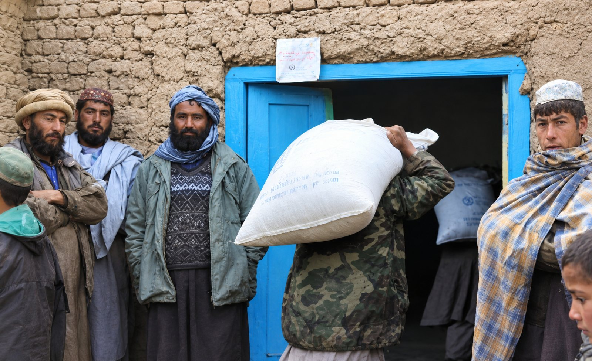

Home / What We Do / Health and Nutrition
Health and Nutrition
Primary health care, nutrition and hygiene
We provide curative primary health care and nutrition services to beneficiaries, and promote personal and environmental hygiene by building the capacity of communities.
Focus
- Health and medical services in remote villages and towns
- Training programs on birth spacing for women
- Adolescent reproductive health and rights
- Health awareness on diabetes, tuberculosis and AIDS
- Community sanitation and sustainable environmental development
Experience
- A team that includes health personnel, psychologists and peer educators working at community level
